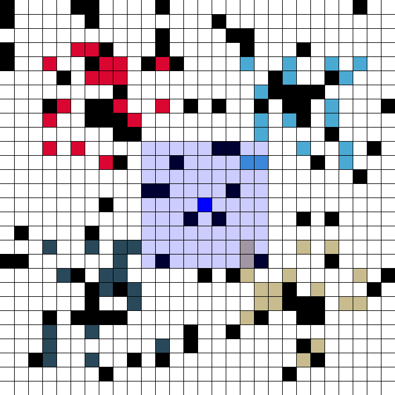
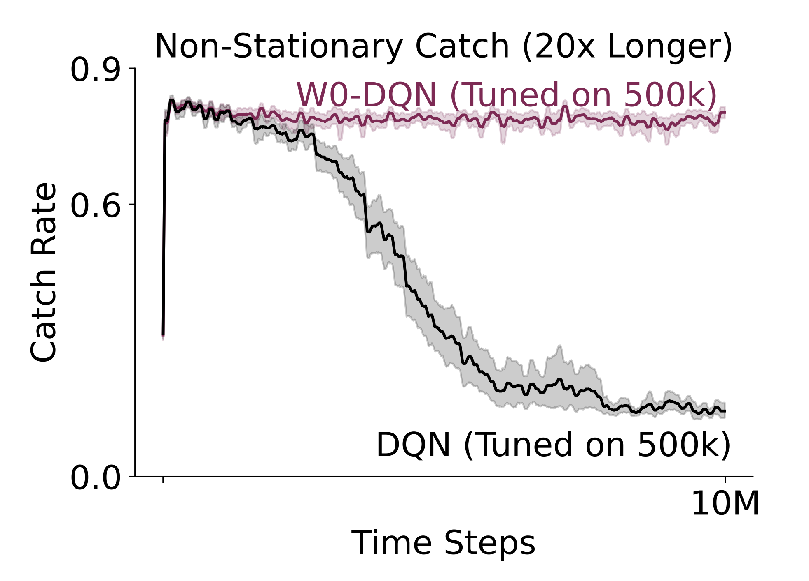
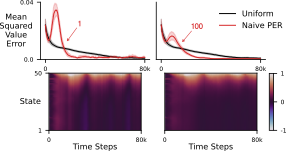
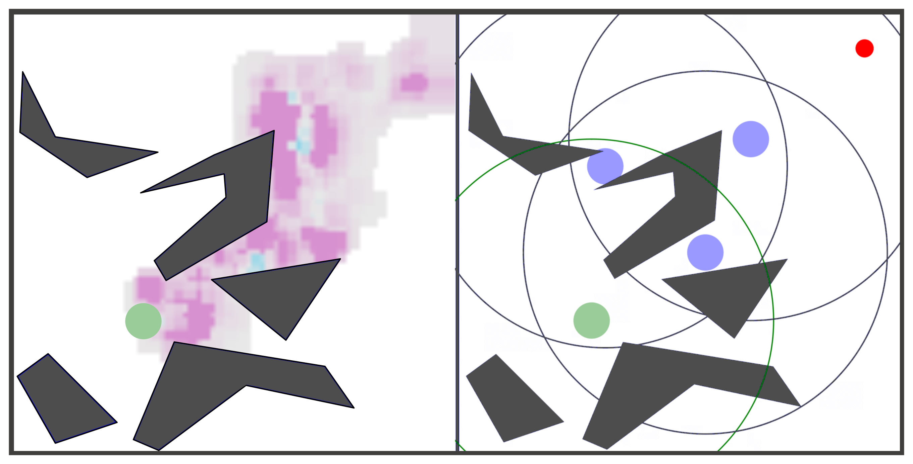
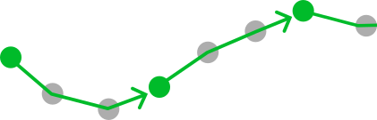
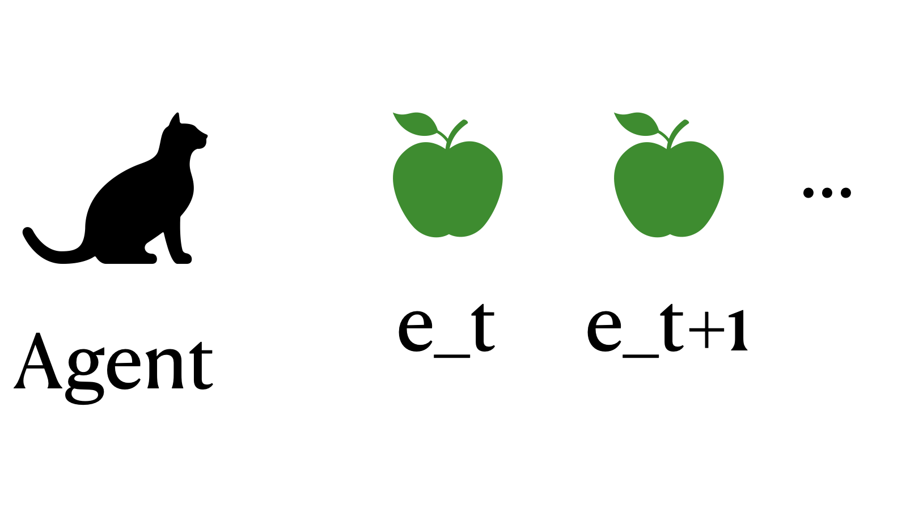
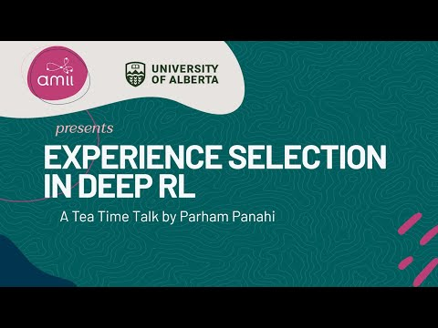

|
Parham Mohammad Panahi I am a Ph.D student at the University of Alberta working on deep reinforcement learning, generative models, and continual learning with my advisors Adam White and Michael Bowling. My current research focuses on identifying essential components of a performant agent that learns by interacting with a big world. I am also fascinated by how intelligent agents store, use, and learn from their past experience. I am affiliated with the RLAI lab and the Alberta Machine Intelligence Institute (amii). I completed my M.Sc. at the University of Alberta in 2024, working with Adam White, and my B.Sc. at Azad University of Iran in 2021. Email / CV / Scholar / Github / M.Sc. Thesis |
Publications |

|
Endpoint Replay: Compressing the Recency Buffer in Deep Reinforcement Learning
Parham Mohammad Panahi, Armin Ashrafi, Haoyu Du, Andrew Patterson, Martha White, Adam White Reinforcement Learning Journal (RLJ), 2026 @article{panahi2026endpoint,
title = {Endpoint Replay: Compressing the Recency Buffer in Deep Reinforcement Learning},
author = {Parham Mohammad Panahi and Armin Ashrafi and Haoyu Du and Andrew Patterson and Martha White and Adam White},
journal = {Reinforcement Learning Journal (RLJ)},
year = {2026}
}
Experience replay remains one of the most practical and useful algorithmic tools in the deep reinforcement learning (DRL) toolbox. Aside from the limited success of prioritized replay and specialized approaches for large asynchronous systems, most DRL algorithms make use of a large, uniformly sampled recency buffer—even the size, one million, remains unchanged. Could we store less data, reduce redundancy, or more effectively chain experience together to speed up value propagation and still retain the performance of large buffers? In this paper, we investigate a simple compression approach that stores representative transitions derived from the end-points of a chain of connected n-step trajectory sequences. By curating these end-points in a much smaller recency buffer, our method maintains an effective memory horizon comparable to a standard large buffer while requiring an order of magnitude less storage. Through empirical evaluation, we demonstrate that this approach prevents the systematic bias inherent in naive compression strategies and matches the performance of traditional large buffers in the Pinball environment and the Atari 2600 benchmark.
A replay buffer compression approach that stores representative transitions derived from the endpoints of n-step trajectory sequences. |
|
 |
Forager: a lightweight testbed for continual learning with partial observability in RL
Steven Tang, Xinze Xiong, Anna Hakhverdyan, Andrew Patterson, Jacob Adkins, Jiamin He, Esraa Elelimy, Parham Mohammad Panahi, Martha White, Adam White Reinforcement Learning Journal (RLJ), 2026 @article{tang2026forager,
title = {Forager: A Configurable Continual RL Testbed with Partial Observability},
author = {Steven Tang and Xinze Xiong and Anna Hakhverdyan and Andrew Patterson and Jacob Adkins and Jiamin He and Esraa Elelimy and Parham Mohammad Panahi and Martha White and Adam White},
journal = {Reinforcement Learning Journal (RLJ)},
year = {2026}
}
In continual reinforcement learning (CRL), good performance requires never-ending learning, acting, and exploration in a big, partially observable world. Most CRL experiments have focused on loss of plasticity—the inability to keep learning—in one-off experiments where some unobservable non-stationarity is added to classic fully observable MDPs. Further, these experiments rarely consider the role of partial observability and the importance of CRL agents that use memory or recurrence. One potential reason for this focus on mitigating loss of plasticity without considering partial observability is that many partially-observable CRL environments are prohibitively expensive. In this paper, we introduce Forager, a lightweight partially-observable CRL environment with a constant memory footprint. We provide a set of experiments and sample tasks demonstrating that Forager is challenging for current CRL agents and yet also allows for in-depth study of those agents. We demonstrate that agents exhibit loss of plasticity, proposed mitigations can help, but that most useful is to leverage state construction. We conclude with a variant of Forager that generates an unending stream of new tasks to learn that clearly highlights the limitations of current CRL agents.
A configurable continual RL testbed with partial observability that runs fast with constant memory footprint. |
|
 |
Position: Lifetime tuning is incompatible with continual reinforcement learning
Golnaz Mesbahi, Parham Mohammad Panahi, Olya Mastikhina, Steven Tang, Martha White, Adam White Forty-second International Conference on Machine Learning (ICML), 2025 @inproceedings{mesbahi2025lifetime,
title = {Position: Lifetime tuning is incompatible with continual reinforcement learning},
author = {Golnaz Mesbahi and Parham Mohammad Panahi and Olya Mastikhina and Steven Tang and Martha White and Adam White},
booktitle = {International Conference on Machine Learning (ICML)},
year = {2025}
}
In continual reinforcement learning (RL) we want agents capable of never-ending learning, and yet our evaluation methodologies do not reflect this. The standard practice in RL is to assume unfettered access to the deployment environment for the full lifetime of the agent. For example, agent designers select the best performing hyperparameters in Atari by testing each for 200 million frames and then reporting results on 200 million frames. In this position paper, we argue and demonstrate the pitfalls of this inappropriate empirical methodology: lifetime tuning. We provide empirical evidence to support our position by testing DQN and SAC across several continuing and non-stationary environments with two main findings: (1) lifetime tuning does not allow us to identify algorithms that work well for continual learning—all algorithms equally succeed; (2) recently developed continual RL algorithms outperform standard non-continual algorithms when tuning is limited to a fraction of the agent's lifetime. The goal of this paper is to provide an explanation for why recent progress in continual RL has been mixed and motivate the development of empirical practices that better match the goals of continual RL.
We argue and demonstrate the pitfalls of lifetime tuning in continual reinforcement learning, explain why recent progress in continual RL has been mixed, and motivate the development of empirical practices that better match the goals of continual RL. |
|
 |
Investigating the Interplay of Prioritized Replay and Generalization
Parham Mohammad Panahi, Andrew Patterson, Martha White, Adam White Reinforcement Learning Journal (RLJ), 2024 @article{panahi2024investigating,
title = {Investigating the Interplay of Prioritized Replay and Generalization},
author = {Parham Mohammad Panahi and Andrew Patterson and Martha White and Adam White},
journal = {Reinforcement Learning Journal (RLJ)},
year = {2024}
}
Experience replay, the reuse of past data to improve sample efficiency, is ubiquitous in reinforcement learning. Though a variety of smart sampling schemes have been introduced to improve performance, uniform sampling by far remains the most common approach. One exception is Prioritized Experience Replay (PER), where sampling is done proportionally to TD errors, inspired by the success of prioritized sweeping in dynamic programming. The original work on PER showed improvements in Atari, but follow-up results were mixed. In this paper, we investigate several variations on PER, to attempt to understand where and when PER may be useful. Our findings in prediction tasks reveal that while PER can improve value propagation in tabular settings, behavior is significantly different when combined with neural networks. Certain mitigations—like delaying target network updates to control generalization and using estimates of expected TD errors in PER to avoid chasing stochasticity—can avoid large spikes in error with PER and neural networks but generally do not outperform uniform replay. In control tasks, none of the prioritized variants consistently outperform uniform replay. We present new insight into the interaction between prioritization, bootstrapping, and neural networks and propose several improvements for PER in tabular settings and noisy domains.
We present insight into the interaction between prioritization, bootstrapping, and neural networks and propose several improvements for prioritized replay in tabular settings and noisy domains. |
|
 |
Goal-Space Planning with Subgoal Models
*Chunlok Lo, *Kevin Roice, *Parham Mohammad Panahi, Scott M. Jordan, Adam White, Gabor Mihucz, Farzane Aminmansour, Martha White Journal of Machine Learning Research (JMLR), 2024 @article{lo2024goal,
title = {Goal-Space Planning with Subgoal Models},
author = {Chunlok Lo and Kevin Roice and Parham Mohammad Panahi and Scott M. Jordan and Adam White and Gabor Mihucz and Farzane Aminmansour and Martha White},
journal = {Journal of Machine Learning Research (JMLR)},
volume = {25},
number = {330},
pages = {1--57},
year = {2024}
}
This paper investigates a new approach to model-based reinforcement learning using background planning: mixing (approximate) dynamic programming updates and model-free updates, similar to the Dyna architecture. Background planning with learned models is often worse than model-free alternatives, such as Double DQN, even though the former uses significantly more memory and computation. The fundamental problem is that learned models can be inaccurate and often generate invalid states, especially when iterated many steps. In this paper, we avoid this limitation by constraining background planning to a given set of (abstract) subgoals and learning only local, subgoal-conditioned models. This goal-space planning (GSP) approach is more computationally efficient, naturally incorporates temporal abstraction for faster long-horizon planning, and avoids learning the transition dynamics entirely. We show that our GSP algorithm can propagate value from an abstract space in a manner that helps a variety of base learners learn significantly faster in different domains.
We constrain background planning to a given set of (abstract) subgoals and learning only local, subgoal-conditioned models to avoid compounding model error. Also presented at the Planning and Reinforcement Learning Workshop at ICAPS 2024. * indicates equal contribution |


{kind=link}
Public Talks |
|
 |
Compressing Replay Buffers by Respecting the Temporal Connectivity of Experiences
AI Seminar 2026, University of Alberta. |
|
 |
Experience Bottleneck and how it shapes our Reinforcement Learning algorithms
Tea Time Talks 2025, University of Alberta. |
|
 |
Experience Selection in Deep RL
Tea Time Talks 2024, University of Alberta. |
|
Based on Jon Barron's website design. |